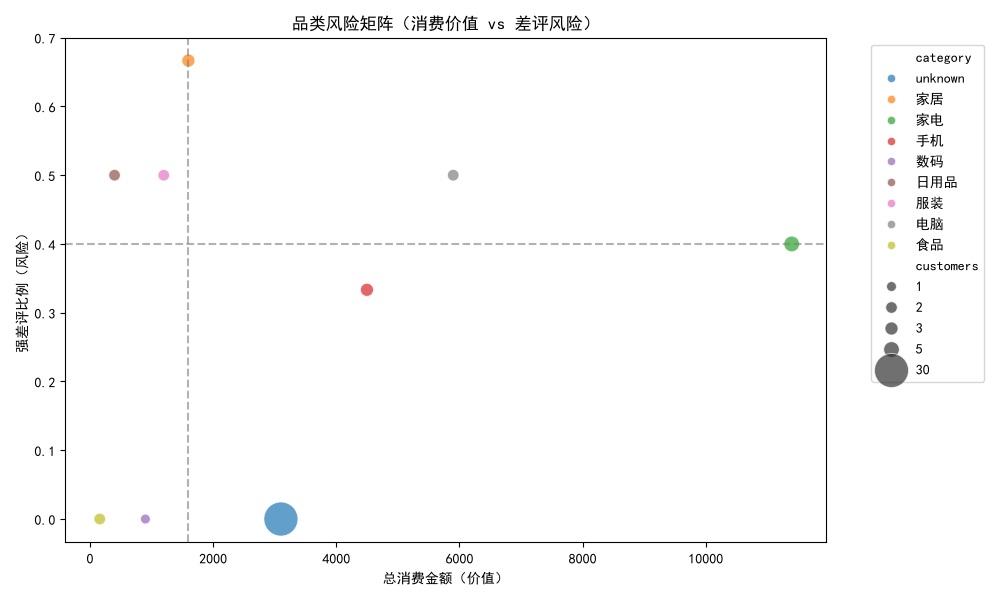
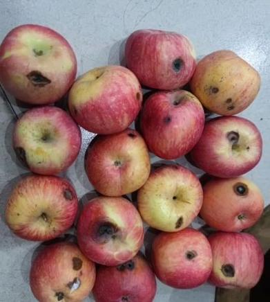
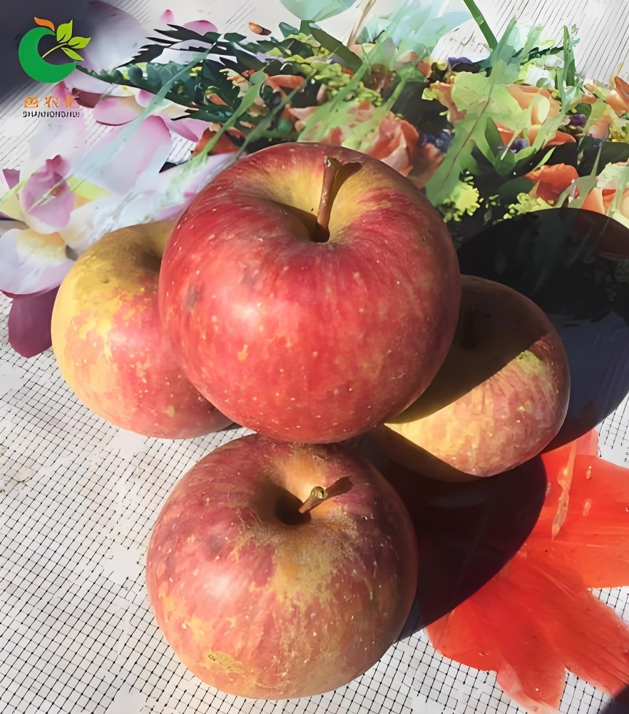
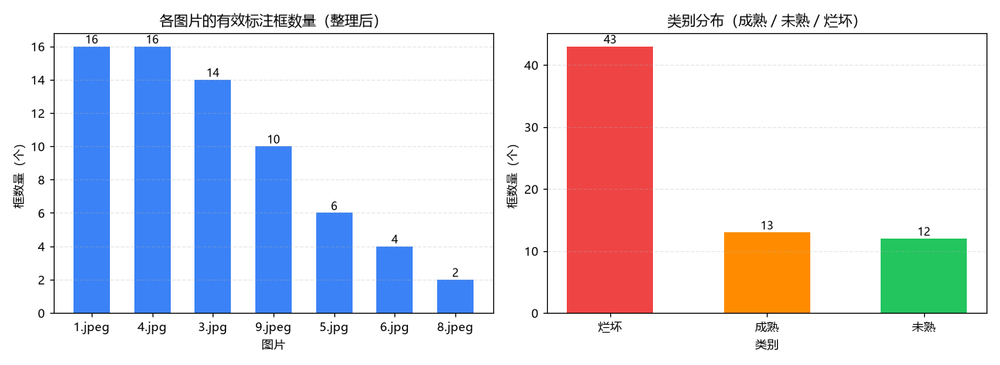

03 / DATA CLEANING
整理清洗
从原始数据到可用、规范、结构化的数据资产
通过不同类型的真实项目，展示数据清洗、规范整理和结构化处理。
DATA CLEANING PROJECTS
清洗项目
PROJECT 01 / E-COMMERCE REVIEW CLEANING电商客户评价数据清洗已完成 / 可复现实验
商业矩阵 · 清洗摘要
原始评价50条
清洗后50条
业务品类9类
− 收起详细
情绪标签
- 非负面
- 39条
- 弱负面
- 3条
- 强负面
- 8条
自动分流结果
- 售后
- 1类
- VIP 运营
- 2类
- 自动化
- 3类
- 常规监测
- 3类
标签由关键词规则生成；“非负面”不等同于“满意”。业务分流统计单位为品类，不是客户人数。
数据来源：本地 business_matrix_rebuild 恢复版于 2026-09-22 运行生成的清洗结果与业务分流 CSV（批次 20260922_094028）。本页展示已核验的静态汇总，不公开客户联系方式。
品类风险矩阵
横轴：消费价值 / 总消费金额；纵轴：差评风险 / 差评比例（强负面占比）；气泡面积表示客户数。虚线采用各指标的 70% 分位数，与 CSV 象限划分一致。悬停、键盘聚焦或点击品类查看详情。unknown 表示未归入已知品类。

PROJECT 02 / TRAFFIC IMAGE CLEANING交通图像数据清洗数据已存在 / 待接入页面
对交通、行人等图片数据进行格式统一、命名整理、异常检查和标注完整性检查，为后续目标标注与训练做准备。
- 图片数据
- 85 张
- 标准化图片
- 85 张
- 已有 XML 标注
- 65 个
- 缺少标注
- 20 张
数据来源：已有本地资产只读扫描结果；本项目暂未接入处理功能。
PROJECT 03 / APPLE IMAGE CLEANING苹果图像数据清洗已整理 / 可复现实验
苹果图像 · 清洗摘要
原始图片8张
JSON 标注8个
有效标注框68个
空标注1个
− 收起详细
代表性原始图片

烂坏样张

成熟样张
数据整理内容
- JSON 标注解析
- 图片路径整理
- 标注框结构化
- ROI 特征提取
- 空标注检查
- 异常样本检查
清洗结果

结构化数据样例
标注框结构
− 收起记录
标注框结构
| image | label | x_min | y_min | x_max | y_max |
|---|---|---|---|---|---|
| 1.jpeg | 烂坏 | 0 | 34 | 112 | 152 |
| 3.jpg | 烂坏 | 363 | 1230 | 747 | 1638 |
| 3.jpg | 成熟 | 179 | 2126 | 847 | 2670 |
| 6.jpg | 成熟 | 439 | 394 | 1292 | 1238 |
| 8.jpeg | 未熟 | 157 | 275 | 423 | 511 |
ROI 颜色特征
− 收起记录
ROI 颜色特征
| image | label | brightness | RG_ratio | RB_ratio |
|---|---|---|---|---|
| 1.jpeg | 烂坏 | 119.8501 | 1.2387 | 1.3741 |
| 3.jpg | 烂坏 | 117.2345 | 1.5637 | 2.2631 |
| 3.jpg | 成熟 | 141.8556 | 1.3884 | 1.6710 |
| 6.jpg | 成熟 | 120.2134 | 1.8869 | 2.1961 |
| 8.jpeg | 未熟 | 128.2673 | 1.1928 | 2.2618 |
两张表各展示 5 行样例；完整文件见 assets/data/apple/。本页只覆盖“整理清洗”环节：原始图片 → JSON 标注整理 → 图片路径修复 → 标注框结构化 → ROI 特征整理 → 清洗结果。
数据来源：本地 apple_intelligence_rebuild 恢复版于 2026-09-22 运行生成的结构化 CSV 与整理报告（批次 20260922_134104）。本页为已核验的静态汇总，仅覆盖整理清洗阶段。
下一阶段：标注训练
以清洗后的结构化数据与规则标签，衔接后续标注训练。